Fun with Filters and Frequencies
Convolution from scratch, edge detection, sharpening, hybrid images, and multiresolution blending.
Part 1.1Convolutions from Scratch
Three implementations of the same convolution, compared: one written with four for loops, one that replaces the inner two with a NumPy dot product, and scipy.signal.convolve2d.
def convolve_4loop(image: numpy.ndarray, kernel: numpy.ndarray) -> numpy.ndarray: kernel_height, kernel_width = kernel.shape padded_image = numpy.pad(image, ((kernel_height//2, kernel_height//2), (kernel_width//2, kernel_width//2)), mode='constant') output_image = numpy.zeros_like(image) for i in range(image.shape[0]): for j in range(image.shape[1]): for ki in range(kernel_height): for kj in range(kernel_width): output_image[i, j] += padded_image[i + ki, j + kj] * kernel[kernel_height - 1 - ki, kernel_width - 1 - kj] # flipped kernel return output_image
def convolve_2loop(image: numpy.ndarray, kernel: numpy.ndarray) -> numpy.ndarray:
kernel_height, kernel_width = kernel.shape
kernel = numpy.flip(kernel).reshape(-1)
padded_image = numpy.pad(image, ((kernel_height//2, kernel_height//2), (kernel_width//2, kernel_width//2)), mode='constant')
output_image = numpy.zeros_like(image)
for i in range(image.shape[0]):
for j in range(image.shape[1]):
image_snippet = padded_image[
i: i + kernel_height,
j: j + kernel_width
].reshape(-1)
output_image[i, j] += numpy.dot(image_snippet, kernel)
return output_image
filter = np.ones((9, 9), dtype=np.float32) / 81 # 9x9 box filter
dx = np.array([[1, 0, -1]])
dy = dx.reshape(3, 1)
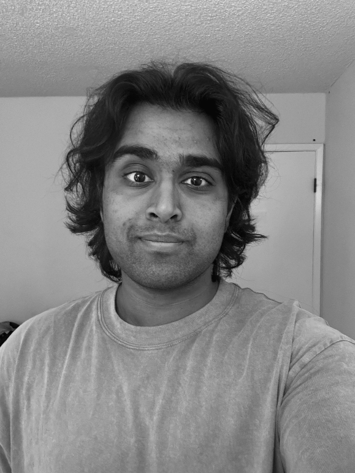


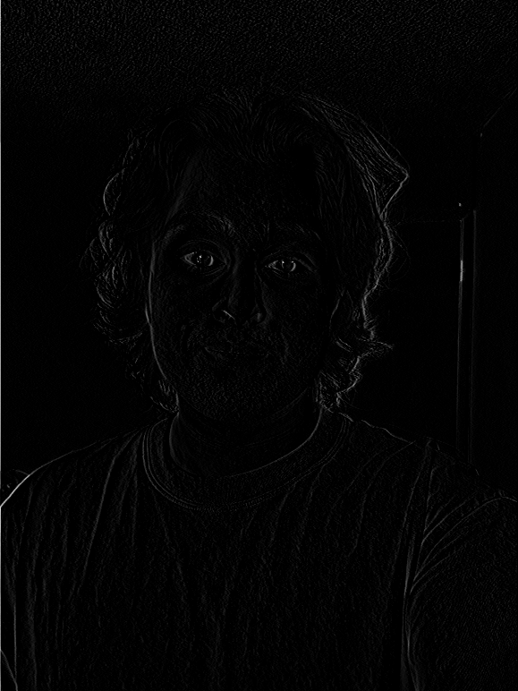
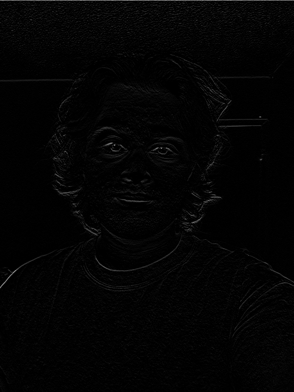
Comparison with scipy
| Kernel | Four-loop | Two-loop | scipy | MSE 4-loop | MSE 2-loop |
|---|---|---|---|---|---|
| Box 9×9 | 9.201 s | 0.436 s | 0.0414 s | 7.44e−10 | 7.12e−10 |
| Dx (1×3) | 1.473 s | 0.451 s | 0.0040 s | 0 | 0 |
| Dy (3×1) | 1.458 s | 0.454 s | 0.0053 s | 0 | 0 |
Runtime. The speedup from four loops to two depends on kernel size, because that is what the vectorized numpy.dot call speeds up: 21x for the 81-element box filter but only 3.3x for the 3-element derivatives. scipy beats both everywhere, by about 11x over the two-loop version on the box filter and closer to 100x on the 3 element filters, where there is almost no arithmetic per pixel and the Python loop dominates.
Accuracy.They are all within the rounding error
Boundaries. Zero-padding treats everything outside the image as black. For the derivative kernels this creates a bright artificial edge along the border, since the step from the padding to the first real pixel is as large as any edge in the scene. For the box filter it darkens the border, because those output pixels average real pixels together with zeros.
Part 1.2Finite Difference Operator
Convolving the cameraman with Dx = [1, 0, −1] and its transpose gives the partial derivatives. Each responds only to changes perpendicular to its own direction, so Dx picks up the tripod legs and the tower while Dy picks up the horizon and the coat shoulders. The gradient magnitude sqrt(dx² + dy²) combines them into an orientation-independent edge strength.
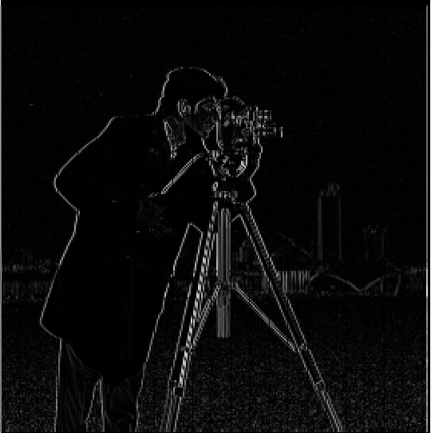
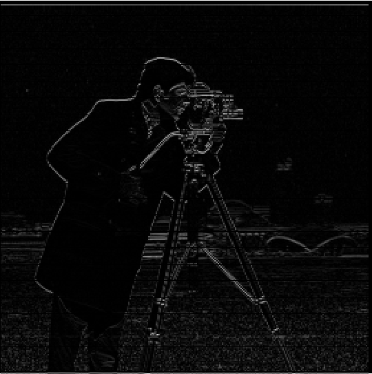
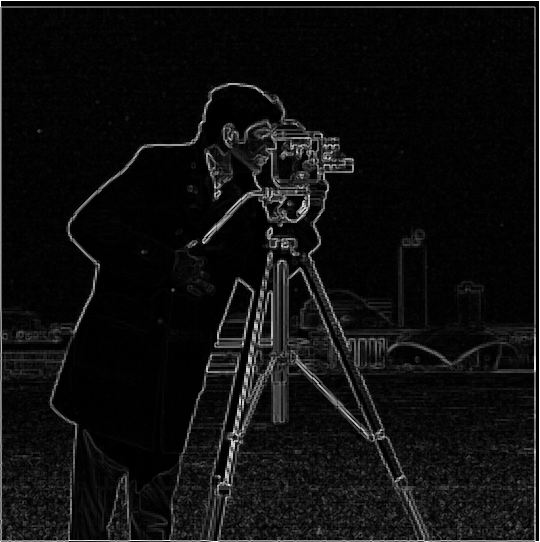
Choosing a threshold
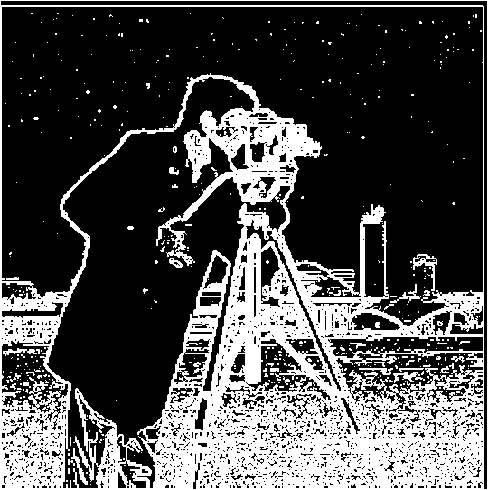
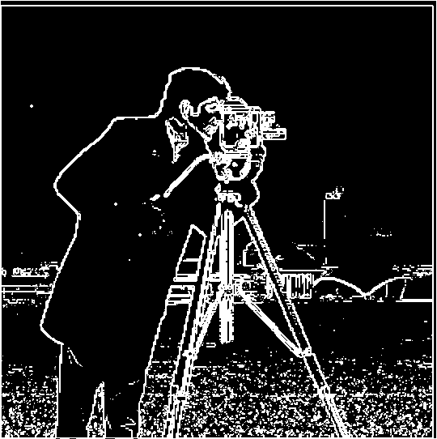
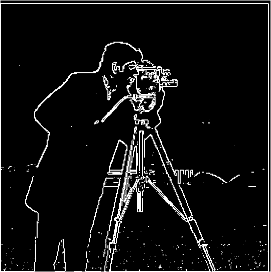
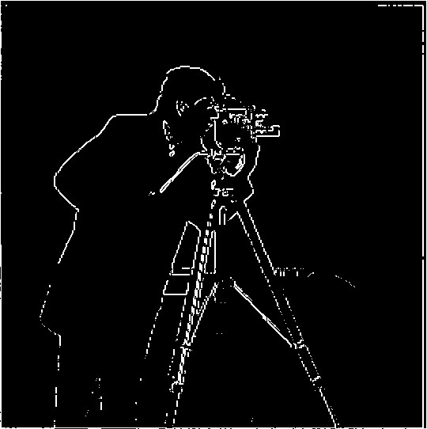
t = 30. Below it the textured grass in the foreground passes as edge, speckling the bottom half of the image. Above it the thin tripod legs and the buildings on the skyline start breaking up, and by 100 only the high-contrast coat outline is left. 30 keeps the camera, the tripod and the skyline intact while clearing most of the grass, which is the tradeoff the assignment asks to make.
Part 1.3Derivative of Gaussian Filter
The finite difference result above is noisy because differentiation amplifies whatever high frequencies are present, including noise. Smoothing first fixes that. A 9×9 Gaussian with σ = 1 is built as the outer product of cv2.getGaussianKernel(9, 1) with its own transpose.
The same smoothed derivative can be reached two ways, shown below as Route 1 and Route 2. Either blur the image first and then differentiate the result, or push the blur into the filter itself and apply one kernel.

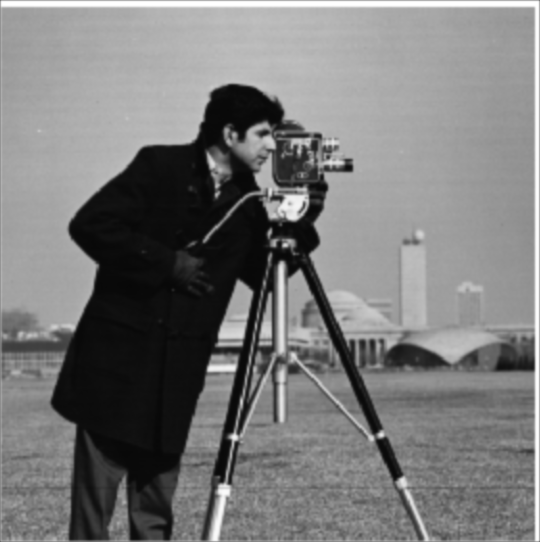
The DoG filters
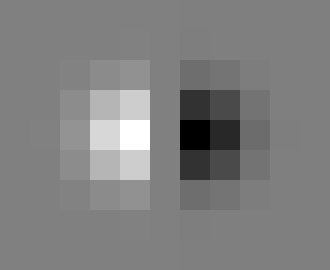
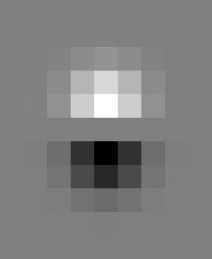
Route 1: blur the image, then differentiate it
Two convolutions over the image. First smooth it with the Gaussian above, then convolve that blurred image with Dx and Dy, exactly as in Part 1.2.
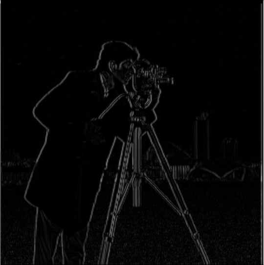
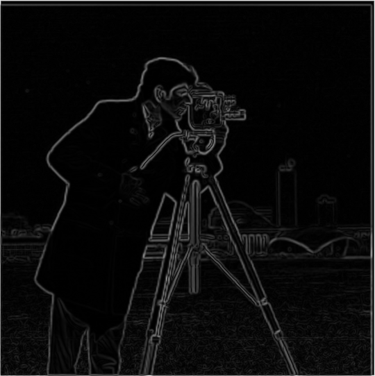
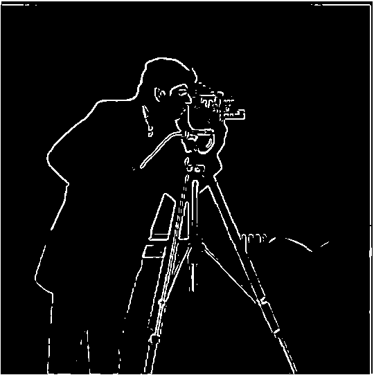
Route 2: one DoG filter
One convolution over the image. Convolve the Gaussian with Dx and Dy first, which gives the two DoG filters shown above, then apply those directly to the original image. The smoothing and the differentiation are already baked into the kernel.
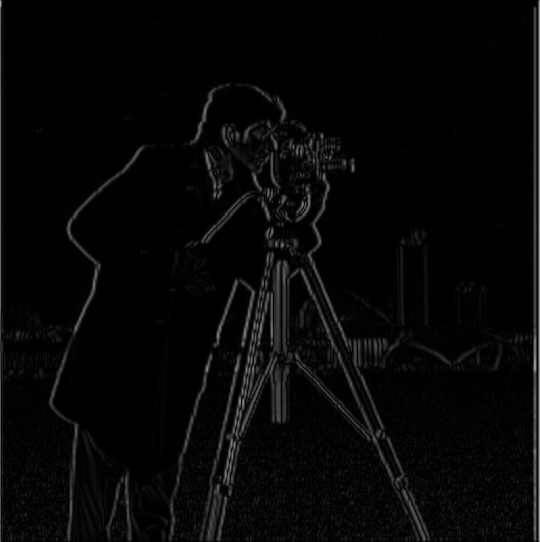
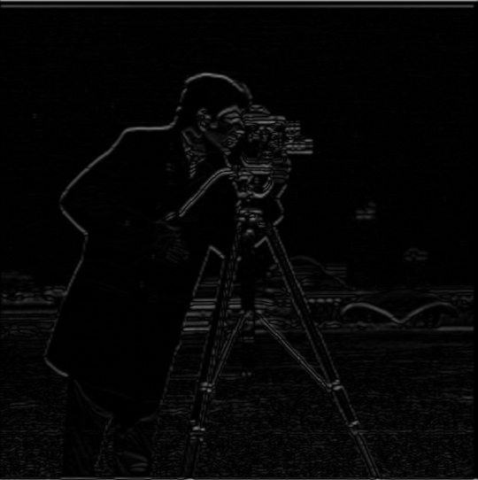
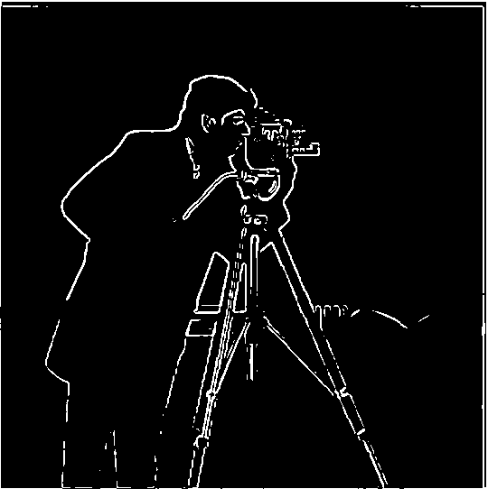
The two routes match. Convolution is associative, so blurring and then differentiating is the same operation as differentiating the blur and applying it once. The two rows above are identical apart from floating point error and a thin strip along the border, where the two routes zero-pad differently. Route 2 is the cheaper one, since it touches the image once instead of twice.
Compared to Part 1.2. The grass that forced the threshold choice earlier is gone, so the edges that remain are the real ones and a higher threshold of 60 is now usable. Edges also come out thicker and smoother, since blurring spreads each intensity step over several pixels before the derivative measures it. The cost is the thin detail: the tripod legs and the far skyline are weaker here than in the unsmoothed version.
Part 2.1Image Sharpening
A Gaussian blur keeps the low frequencies, so subtracting it from the original leaves the high frequencies: the edges and fine texture. Adding those back scaled by α gives the unsharp mask. Folding it into one kernel, (1 + α)·e − α·g where e is the identity and g the Gaussian, makes it a single convolution. The coefficients sum to 1, so average brightness is unchanged.
A blurry photo of my own
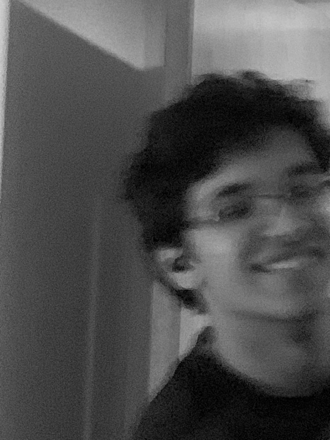
The Taj Mahal
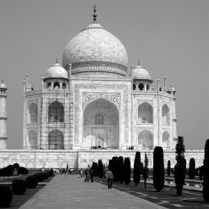
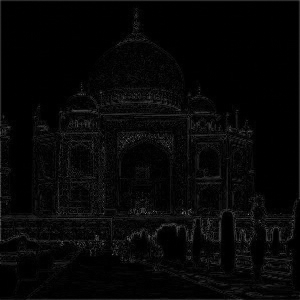
Varying the sharpening amount
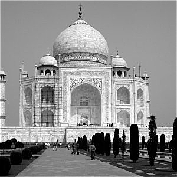
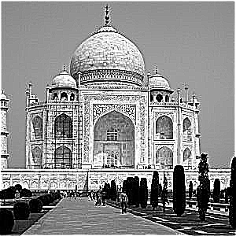
At α = 1 the minaret edges and the inlay detail tighten up. By α = 5 bright halos appear either side of every strong edge, and at α = 7 the sky has visible ringing and the flat stone has turned grainy, because the filter is amplifying sensor noise along with real detail.
My own image
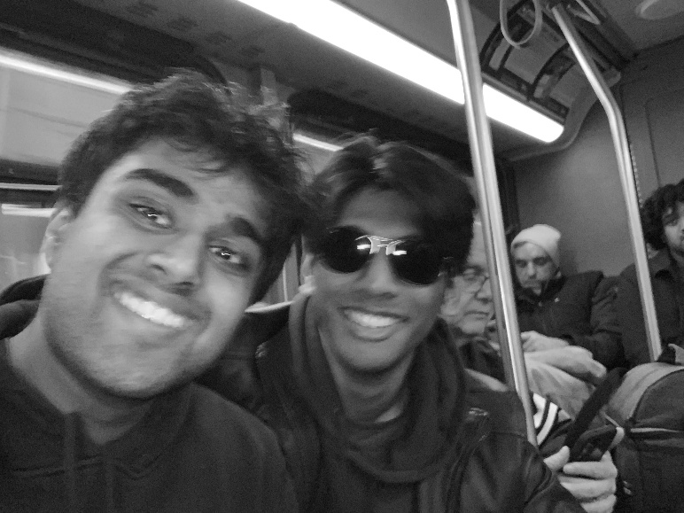
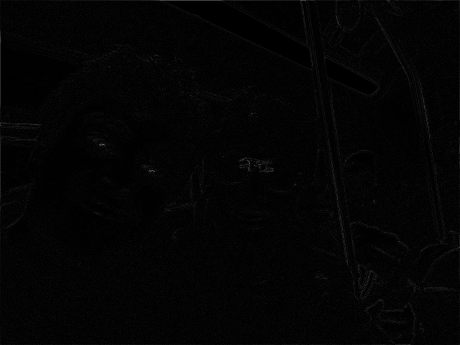
Blurring a sharp image, then sharpening it back
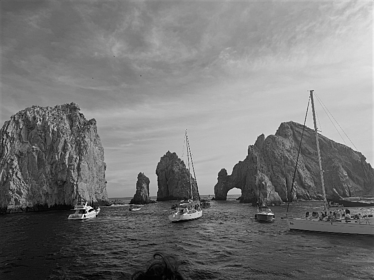
The recovered image looks close to the original but is not the same. Blurring attenuates the high frequencies rather than storing them, so the unsharp mask can only amplify what survived. Detail that the blur pushed near zero, like the texture on the distant rock face, cannot come back, and boosting what is left also boosts the noise that was mixed into it. Sharpening is not an inverse of blurring.
Part 2.2Hybrid Images
Following Oliva, Torralba and Schyns, two images are combined so that which one you see depends on viewing distance. Up close the eye resolves fine detail, so the high-pass image dominates. Far away those frequencies are no longer resolvable and only the low-pass image survives.
The low-pass image is a Gaussian blur. The high-pass image is the image minus its own blur. Both inputs are standardized to zero mean and unit variance before alignment, so that neither photo wins on contrast alone, and so the zero that align_images pads with becomes the mean grey rather than black. The two bands are then added with a per-pair weight, since high-pass filtering discards most of an image's energy and the two halves would otherwise be badly unbalanced.
Full process: me and my dog
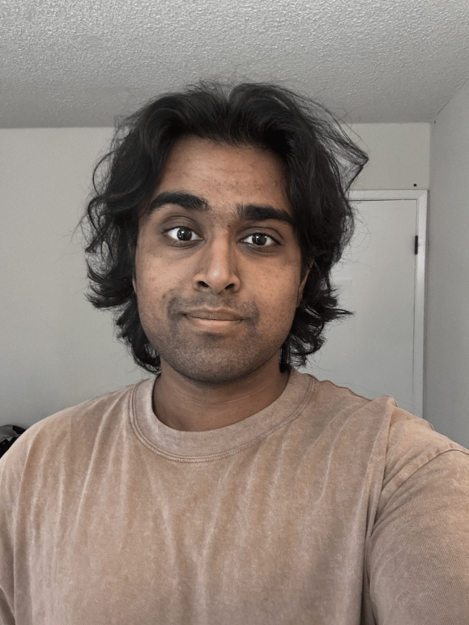
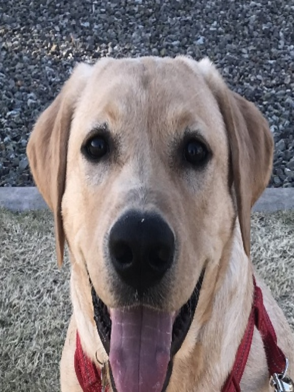
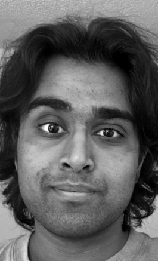
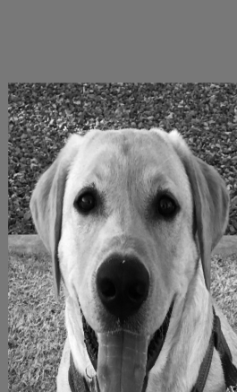
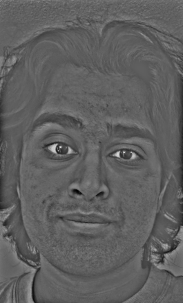
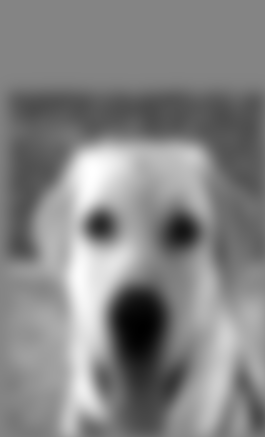
The hybrid, at two viewing distances
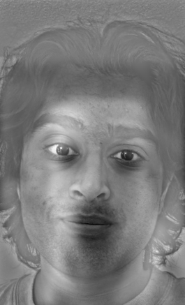
Interactive on the live page: the buttons resize the image in place. A printed PDF captures only the close view.
Close view: my hair, eyebrows and stubble dominate and the dog recedes.
Frequency domain
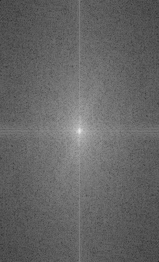
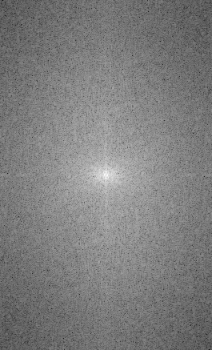
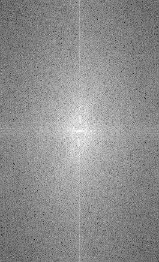
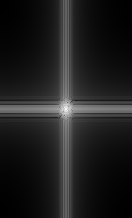
Each is log|fftshift(fft2(image))|, with low frequencies at the centre. The low-passed spectrum keeps only a bright core. The high-passed one is the complement, dark at the centre and bright further out. The hybrid shows both at once, which is what makes the illusion work: the information is all there, and the viewing distance decides which part of it reaches you.
Cutoff frequencies
| Pair | High-pass σ | Low-pass σ | Weight |
|---|---|---|---|
| Nutmeg over Derek | 4 | 8 | 4.5 |
| Me over my dog | 6 | 8 | 0.8 |
| Me over an older photo | 4 | 10 | 2.5 |
As a cutoff frequency rather than a kernel width, fc ≈ 1/(2πσ) cycles per pixel: σ = 4 is about 0.040, σ = 6 about 0.027, σ = 8 about 0.020 and σ = 10 about 0.016.
The high-pass cutoff is the parameter that decides when the switch happens. Raising it past 8 on the cat leaves enough mid-frequency energy that she stays visible at any distance and Derek never appears. Dropping it below 3 removes so much that she never appears at all. The older-photo pair needs the smallest cutoff of the three, because both images are my own face and only the hair differs, so the high-pass band has to be narrow enough that just the curls survive.
The weights differ more than the cutoffs. The cat needs 4.5 because a smooth studio portrait contributes almost nothing at high frequency while fur and whiskers contribute a great deal, so the bands are badly mismatched. My dog needs only 0.8, since in grayscale his light coat against dark grass is already a strong signal.
Two more


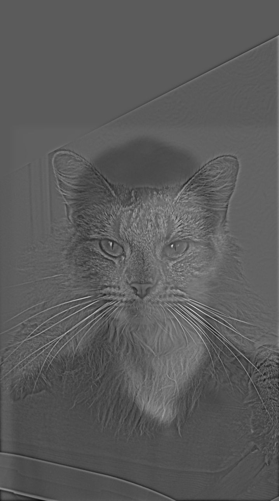
Close view: Nutmeg's eyes, whiskers and fur sit on top of Derek.
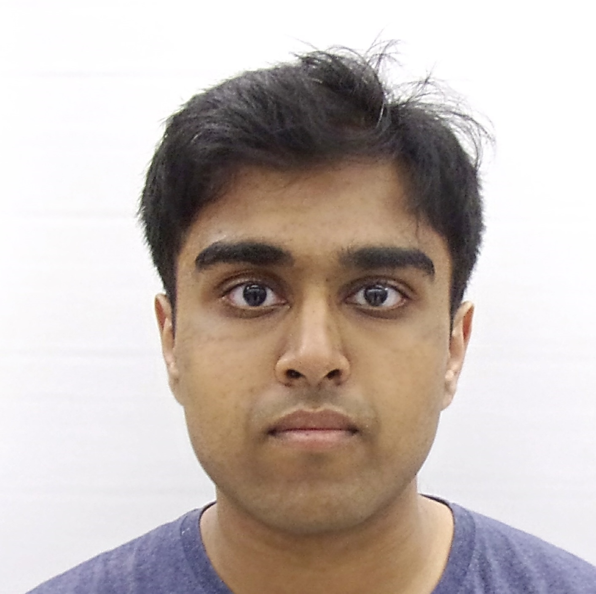
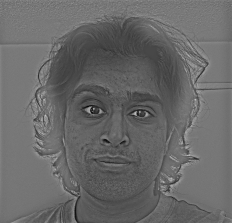
Close view: the curls read clearly against the older photo underneath.
What did not work. The pair that fought hardest was me and my dog. Both photos have busy backgrounds, a door frame and wall edge behind me and grass and gravel behind him, and blurring does not remove background structure, it only softens it. The cleanest result is the cat and Derek, where both subjects are centred on plain backgrounds, their light and dark regions line up, and one subject is smooth skin while the other is fur, so the two barely compete for the same band.
A failure: bad alignment
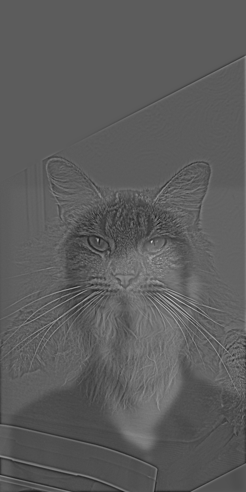
Identical σ and weight, only the clicked points moved. Because the alignment centres the two images on the midpoint between the marked points, mislabelling Derek's eyes translates him down and out of frame, so his face no longer sits under the cat's. Nothing is left to emerge at a distance and the result just reads as a cat at every viewing distance. The cutoffs decide which bands survive, but alignment decides whether the two percepts land on top of each other at all, and no amount of tuning recovers from getting it wrong.
Part 2.3Gaussian and Laplacian Stacks
A stack rather than a pyramid: nothing is downsampled, so every level stays the full size of the original. Level i of the Gaussian stack blurs the original with σ = 2i, doubling each level in the same way that halving the resolution would. Each Laplacian level is the difference between consecutive Gaussian levels, so it holds the band of frequencies the next blur is about to remove, and the last level keeps the leftover low frequencies. The stack therefore sums back to the original, which I verified.
Both stacks are built from scratch with cv2.getGaussianKernel and scipy.signal.convolve2d, with no built-in pyramid functions.
Gaussian stacks

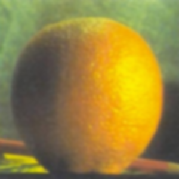
Laplacian stacks
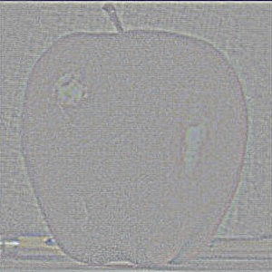
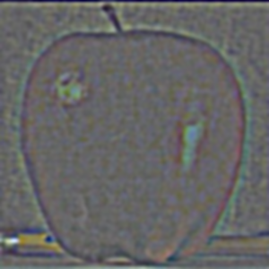
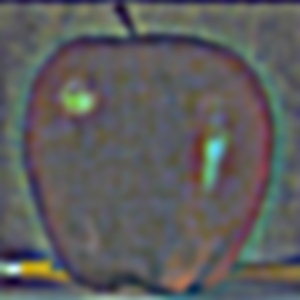
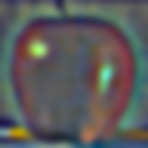
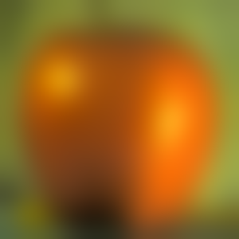
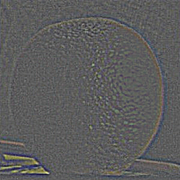
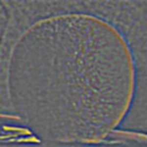
The mask, blurred to match each band

Figure 3.42, recreated
Reading down a column shows the seam widening. At level 0 the mask is still nearly a step and the transition is a pixel or two wide, which is what a sharp band needs. By level 4 the mask has been blurred with σ = 16 and the two halves overlap across most of the image, which is what a band containing only the broadest colour gradients needs. Blending every band with a seam matched to its own scale is the whole idea.
Part 2.4Multiresolution Blending
The algorithm is the one on page 230 of Burt and Adelson: build Laplacian stacks LA and LB for the two images and a Gaussian stack GR for the mask, combine them band by band as LS = GR·LA + (1 − GR)·LB, then sum the levels. Since these are stacks rather than pyramids, the expand step is unnecessary and step 3 is a plain sum. Everything is done in colour, one channel at a time with the same kernels.
Each result below is shown next to the same mask applied as a hard cut, with no blending, for comparison.
The oraple, vertical seam


Me as my dog, irregular mask

Both photos are placed so the eyes sit on top of each other at the same spacing, which is what lets one oval read as a single face. Masking only a wide, shallow band across the eyes keeps the dog's snout, nose and mouth, so the result still reads as him. Replacing his whole face instead removed the snout and the tongue ended up hanging from nothing.
The same result, band by band
Day and night, vertical seam
The same view of a golf course, handheld, so the night frame sat about 250 px lower. I found the offset by matching the sunset glow against the city lights and shifted before cropping both to the overlap, otherwise the horizon would step across the seam. The blend carries the horizon, the cloud bank and the treeline straight through while the light falls off gradually.
TakeawayThe Most Important Thing I Learned
That how an image is written to disk is part of the algorithm, not an afterthought. Several results I thought were broken were correct all along and only looked wrong because of the last line of code.
The hybrids came out washed out because cv2.imwrite truncates values outside 0 to 255, while plt.imshow silently rescales whatever you hand it. The high-pass band is centred on zero by construction, so half of it was being clipped away. Later, the Derek blend looked flat no matter how I tuned the cutoffs, and the cause turned out to be normalizing by the minimum and maximum: those extremes came from the zero padding that align_images adds, not from the photograph, so all the real content was squeezed into the middle third of the range. Raising the weight made it worse, because the padding scaled up with the signal. What fixed it was standardizing before alignment rather than after, so the padding came out mid grey instead of black.
The same idea runs through the whole project. Convolution, the Laplacian stack and the blend all produce signed, zero-centred values, and every one of them needed a deliberate decision about how to map that back into an image before I could tell whether the maths was right.